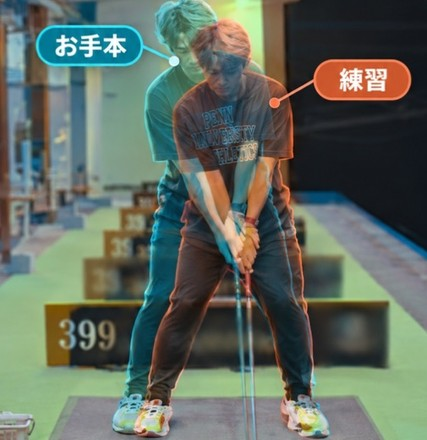
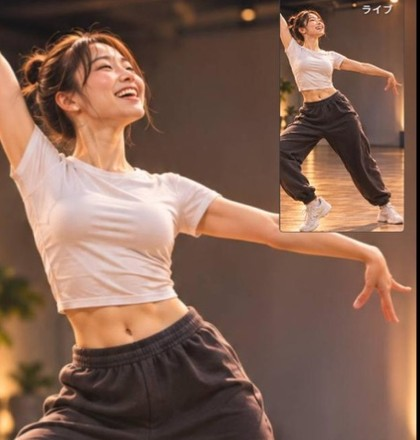
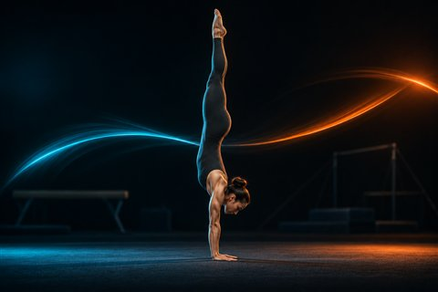
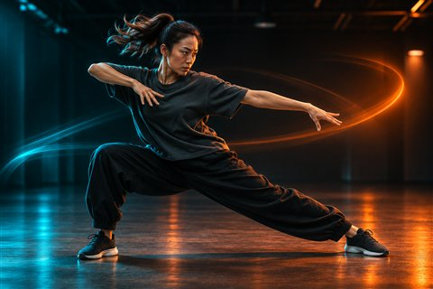

フォーム比較
2本の動画を重ねる
お手本と自分を同じ瞬間で止めて、姿勢や手足の位置を見比べます。

操作手順と動画を見る30秒
- お手本と自分、または前回と今回の動画を選ぶ
- 構えや着地など、同じ瞬間にそろえる
- 重なりの濃さを変えたり、コマを送ったりして違いを見る
30秒・音声付き
アプリの掲載画面も見る
半透明で重ねて、動きのズレを確認。
iPhone用フォーム比較アプリ
お手本と自分の動画を重ねて比べる。
ひとりの練習では、動いた直後を見返せます。
登録不要 · iOS 16.0以降 · 広告とアプリ内購入あり
Ghostformは、動画比較・AI骨格表示・ディレイ再生が無料。
PROも一度の購入で使えます。
日本のiPhone版 · 時点
¥680買い切り
公開記念価格¥1,500／月
Standardの月額プラン¥400／月
年額プランは¥4,000¥1,100／月
年額例は¥3,500・¥9,000| アプリ | 動画比較 | ディレイ | 姿勢解析 |
|---|---|---|---|
| Ghostform | 重ねる 左右・上下 | 3〜10秒PRO 60秒まで | 2D骨格端末内で解析 |
| A社 | 重ねる 並べる | 記載なし | 2D骨格Standard |
| B社 | 重ねる 並べる | 対応 | 記載なし |
| C社 | 分割表示 | 対応 | 競技別の |
「記載なし」は、確認した公式説明に記載がなかった項目です。機能の利用条件はプランや端末により異なります。
各社の日本向けApp Store掲載情報と開発元の公開情報を、上記の日付に確認しました。料金は個人向け有料プランの掲載例です。他のプラン・購入条件がある場合もあり、最新の価格や利用条件は各アプリの購入画面をご確認ください。
公式の掲載情報を比較したもので、各社アプリの実機テストや解析精度の比較は行っていません。
どちらも無料で使えます。
フォーム比較
お手本と自分を同じ瞬間で止めて、姿勢や手足の位置を見比べます。

半透明で重ねて、動きのズレを確認。
ディレイ再生
iPhoneを置いて練習。画面に戻ると、数秒前の自分の動きが映ります。

無料版は3〜10秒、PROは最大60秒まで設定できます。
ディレイ再生を無料で使う基本機能は無料です。
長いディレイや高画質の書き出しが必要な方は、アプリ内でPROを購入できます。
| プラン | 無料版¥0 | PRO¥680買い切り |
|---|---|---|
| 動画比較 AI骨格表示 | 使える | 使える |
| ディレイ | 3〜10秒 | 最大60秒 |
| 書き出し | 720p1日3本まで | 1080p本数制限なし |
| 広告・ロゴ | あり | なし |
PROは月額・年額の支払いなし。¥680は日本での公開記念価格です（2026年11月14日確認）。最新価格はアプリ内の購入画面でご確認ください。
競技を選ぶと、フォームのどこを見るかを確認できます。

体操倒立と着地の姿勢
ダンスポーズの手足の位置写真はAIによる活用イメージです。動画を比べるときは、撮影方向と動作のタイミングをそろえてください。
はい。自分の前回と今回の動画でも比較できます。ディレイ再生なら、その場でカメラに映った自分の動きを見返せます。
はい。無料版からPROに自動で切り替わることはありません。無料で使える機能と利用上限を見る
動画の処理と骨格解析は端末内で行います。動画を外部のサーバーへ送信しません。広告などのデータの扱いはプライバシーポリシーをご覧ください。
このサイトではiPhone版をご案内しています。対応機種はApp Storeの掲載情報、操作についての質問や不具合の連絡はサポートページでご確認ください。
iPhoneで無料から始められます。